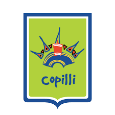

Diego Giovani Velázquez López
Rol: Fundador y desarrollador
Programador y diseñador web con pasión por la arqueología americana.
- Especialidad: Arqueología y patrimonio cultural
- Ubicación: Ciudad, país
Explorando el patrimonio cultural a través del tiempo
Conoce al autor y responsable de este proyecto. Completa los datos con el nombre, rol, y la información que quieras mostrar.
Rol: Fundador y desarrollador
Programador y diseñador web con pasión por la arqueología americana.

Escuela: Colegio Copilli
El Colegio Copilli, ubicado en Tonalá, Jalisco, es una institución privada de educación básica (preescolar, primaria y secundaria) centrada en la formación integral, el constructivismo y valores. Ofrece inglés, robótica y talleres artísticos en un horario de 7:45 a 14:30 horas, con enfoque en la conciencia ambiental.